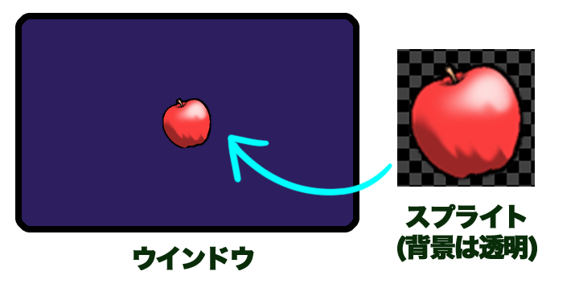

HSP : Hot Soup Processor ver3.7 / onion software 1997-2025(c)
標準スプライトプログラミングガイド

- はじめに
- 使用方法
- HSPDXプラグインとの違い
- スプライトとは
- 初期化とキャラクタパターンの登録
- スプライトの登録
- スプライトの移動
- スプライト有効エリア
- スプライトパラメーター
- スプライトの表示優先順位
- スプライト管理命令
- アニメーション
- スプライトの変形と効果
- スプライトコールバック
- BGマップ描画機能
- 異なるバッファへのスプライト描画
- スプライト方向パターンの制御（New!）
- スプライトの重力設定（New!）
- BGマップアトリビュートの設定（New!）
- BGマップ当たり判定（New!）
- スプライトの親設定（New!）
- BGマップのイベント情報（New!）
- デコレーションスプライト設定（New!）
- スプライト描画オプション設定（New!）
- 疑似3Dスプライト描画（New!）
はじめに
標準スプライトは、2Dゲームなどの描画に使用することのできる手軽な命令群を指します。
ゲームなどで使用する画像をまとめて動かしたり、検索したりといった管理を仕組みを提供します。
標準スプライト命令は、hspdxプラグインとして追加されていた命令と互換があり、
2D描画を手軽に扱うことが可能です。
これまでにも、HSP3で2D描画を行う際に、スプライト(矩形の画像)を利用するための手段はいくつか用意されていました。
・HSPDXプラグイン ・HGIMG/HGIMGXプラグイン ・HGIMG3プラグイン ・HGIMG4プラグイン ・mod_spriteモジュール
この中で、HSPDX、HGIMG、HGIMGXまでのプラグインはHSP2時代のもので、すでに開発が終了しており、
現在のOSや環境で動作させることが困難になっています。
HGIMG3/HGIMG4プラグインには、3D機能とともに高機能な2Dスプライトとしての
機能も持っていますが、座標をすべて実数で管理し、機能が多い代わりに
習得する内容も増えて手軽には扱いずらい所がありました。
そこで、最も長い歴史があり、多くのユーザーが使用してきたHSPDXプラグインの
命令をもとに、手軽で扱いやすい2D専用のスプライトとして用意されたのが標準スプライトです。
シンプルな命令でスプライトを表示でき、スプライトの画像を自由に登録できる
柔軟なシステムを搭載しています。また、スプライトコールバックやマップ描画など
ユニークな仕組みも導入され、元のHSPDXプラグインよりも利便性が向上しています。
座標も整数で管理されており、2DゲームやUI表示などで扱いやすいものになっています。
もちろんイベントリストによる自律移動や3Dとの連携については、従来のプラグインを利用することもできます。
標準スプライトは、HSP3Dish、HGIMG4がサポートする全プラットフォームで動作するほか、
HSP3標準ランタイムでもサポートすることを予定しています。
また、ゲームなどより高度な処理をサポートするための「珠音ドットフレームワーク」が用意されています。 これは、標準スプライトの機能を使用して作られたゲーム専用のフレームワークです。
使用方法
標準スプライトの命令は、HSP3Dish及びHGIMG4ランタイムに統合されています。 スクリプトの先頭に「#include "hsp3dish.as"」という行を追加して HSP3Dishランタイムを指定すれば、標準スプライトの命令も使用できるようになります。
#include "hsp3dish.as" ; HSP3Dishランタイムを使用する
HSP3Dishランタイムの拡張版である、HGIMG4でも同様に標準スプライトの命令を使用できます。 もちろん、HSP3Dish/HGIMG4ランタイムの描画機能、HSP3の命令もすべて利用可能です。
HSPDXプラグインとの違い
標準スプライトの命令は、HSPDXプラグインの命令と多くの場合互換を持っていますが、
すべての命令で完全な互換性があるわけではありません。
HSPDXプラグインは、HSP2の時代に開発されたもので画面の初期化やパレットの利用など、
当時のディスプレイドライバに合わせた仕様も含まれていました。
標準スプライトでは、現在のディスプレイドライバの仕様を考慮して、パレットに関する
機能は削除しています。また、画面の初期化にかかる命令(es_screenなど)は、
HSP3Dish側の持つ仕組み(screen命令)を使う形になります。
また、HSPDXプラグインでは、es_sync命令によって画面の更新を行っていましたが、
この命令は廃止され(キーワードとしては認識されますが、何も行われません)、
HSP3Dishの描画に合わせた形で行うことになります。
多くの場合、過去のHSPDXプラグイン向けのスクリプトは手直しをする必要がありますので、
まったくそのまま動く互換性ではないことにご注意ください。
しかし、スプライトやキャラクターの設定に関しては、es_～で始まるHSPDXプラグインの命令を
ほぼすべてサポートしています。また、後に拡張されたHSPDXfixプラグインが持つ
特殊効果(エフェクト)や回転拡大縮小などの表現も内包しています。
定数や内部構造もHSPDXプラグインに近い形式になっているため、一部の手直しを行うことで
最新の環境でも動作することになるはずです。
HSPDXプラグインは、Windowsプラットフォームのみのサポートでしたが、
標準スプライトに置き換えることで、webブラウザやスマートフォン、LinuxやRaspberryPiなど
多くのデバイスで動かす道が開けます。
スプライトとは
スプライトとは、画面上の自由な場所に配置できて、好きな画像を表示できる
矩形(四角形)のことです。ちょうど、絵の描かれた四角いパネルを、画面の上に1枚1枚
貼り付けていくようなものです。
たとえば、シューティングゲームの自機や、敵キャラクターも図形を表示して
いるスプライトと考えることができます。さらに、ミサイルや爆発マークなど
すべての画像を出している最小単位がスプライトと言えます。このように、
決まった図形を画面の任意の場所に表示する、入れ物をスプライトと呼んでいます。

スプライトは、あくまでも入れ物なので、表示するための絵を用意する必要があります。 それを、キャラクタパターンと呼んでいます。 キャラクタパターンは、透明な背景を持つ画像ファイル(.PNGファイルなど)から 一部を切り取って持ってくることができます。
スプライトは、スプライトNo.という番号で管理され、その1つ1つに別々な画像を
表示させることができます。 スプライトとして表示されるキャラクタパターン
もまたキャラクタNo.という番号で管理されます。
キャラクタパターンは、あらかじめ画像ファイルを読み込み、その1部分を
切り出し、登録しておく必要があります。
スプライトができることはこれだけです。
1つのスプライトには、1つのキャラクタパターンを割り当てることができ、
途中で変更することもできます。また、複数のキャラクタパターンを一定時間
ごとに切り替えてアニメーションのように見せたり、スプライトに割り当てた
キャラクタパターンを変形させたり、合成の方法を変更することもできます。
初期化とキャラクタパターンの登録
スプライトを管理することにより、より手軽でシンプルにゲームなどを作成することができます。 実際にスクリプトを書いて試してみましょう。 標準スプライトの機能を使用するため、#include命令によってランタイムの使用を宣言します。
#include "hsp3dish.as" ; HSP3Dishランタイムを使用する
通常は、HSP3Dishを使用します。3D機能を併用する場合は、「#include "hgimg4.as"」
でも構いません。
さらに、スプライトを使用する場合には、最初にスプライトシステムを初期化する必要があります。
システムの初期化は、es_ini命令で行ないます。
es_ini ; スプライトの初期化
スプライトの初期化をしたら、スプライトの表示が可能になります。
最初にこの命令を入れないと、スプライトに関する命令を実行しようとした時に
「サポートされない機能を選択しました」というエラーが出ますので注意してください。
スプライトは、スプライトNo.という番号で管理され、その1つ1つに別々な画像を
表示させることができます。 スプライトとして表示される画像をキャラクタパターンと呼び、
これもまたキャラクタNo.という番号で管理されます。
この、スプライトNo.と、 キャラクタNo.をいくつまで登録できるようにするかを
es_ini命令による初期化時に指定することができます。
es_ini p1,p2,p3,p4 システムの初期化 p1=スプライトの最大数 p2=キャラクタ定義の最大数 p3=周の精度 p4=マップ定義の最大数
パラメータを省略すると、スプライトは512個まで、 キャラクタ定義数は1024
個まで、周の精度は1周64度としてスプライトを初期化します。
es_ini命令は何度でも実行することができるので、スプライトを
すべてクリアしたい時などにも使用可能です。
また、es_ini命令によりスプライトとキャラクタの最大数を自由に増加させることができます。
ただし、その分メモリを多く消費します。
(逆に言えば、es_ini命令を実行しない限りはHSP3Dishは、余計なメモリを一切確保しません。)
スプライトを使用するための準備として、キャラクタパターンの登録を行なう
必要があります。
キャラクタパターンの登録方法は、まず、
es_size p1,p2,p3,p4 キャラクタサイズ指定 p1=キャラクタのXサイズ p2=キャラクタのYサイズ p3=ヒットチェック領域(%) (初期値=100) p4=特殊効果(EP値)の指定
でキャラクタサイズを指定します。(p1,p2)がキャラクタのX,Yサイズ(ドット単位)
になります。 p3は当たり判定を行なう際のヒットチェック領域が、全体の何%に
なるかを指定します。100を指定すると、(p1,p2)で指定したサイズいっぱいに
ヒットチェックを行ないます。(デフォルト値は100%になっています)
p4は、特殊効果(EP値)のデフォルト設定になります。通常は省略して構いません。
特殊効果(EP値)については、後ほど説明します。
キャラクタのX,Yサイズには特に制限はありませんが、 画像からはみ出すような
キャラクタパターンの指定は無効になります。
es_size命令の設定は、以降のキャラクタ定義でずっと有効になります。
これでサイズを設定したら、es_pat命令でキャラクタパターンを登録します。
より詳細なキャラクタサイズ設定を行うためのes_sizeex命令も用意されています。
es_sizeex p1,p2,p3,p4,p5,p6,p7,p8,p9 キャラクタサイズ詳細指定 p1(16)=キャラクタのXサイズ p2(16)=キャラクタのYサイズ p3($3ff)=p4=特殊効果(EP値)の指定 p4(0)=当たり判定Xサイズ p5(0)=当たり判定Yサイズ p6(0)=当たり判定オフセットX p7(0)=当たり判定オフセットY p8(0)=表示オフセットX p9(0)=表示オフセットY
指定されたキャラクターサイズをもとに、キャラクターパターンを定義します。
es_pat p1,p2,p3,p4,p5 キャラクタパターン定義 p1=キャラクタNo. p2=キャラクタパターンの左上X座標 p3=キャラクタパターンの左上Y座標 p4=表示フレーム数(0) p5=ウインドウバッファID
p1のキャラクタNo.に、 (p2,p3)の座標を左上として、
es_sizeで設定した大きさのキャラクタパターンが登録されます。
ここで対象となる画像は、picload命令またはcelload命令であらかじめ
ウインドウバッファに読み込んでおく必要があります。
p5で、ウインドウバッファIDが指定されていればそのウインドウバッファから、
p5が省略されている場合は、現在の操作先にあたるウインドウバッファから、
画像の中の一部を切り出してきてキャラクタパターンとして登録します。
es_pat命令1回で、指定したキャラクタNo.にキャラクタパターンが登録されます。
たくさんのキャラクタパターンが必要な場合は、そのぶん登録をしておく必要があります。
p1パラメーターを省略するかマイナス値にした場合は、自動的に空いている
キャラクタNo.が割り当てられます。この命令を実行後に、システム変数statに
割り当てられたキャラクタNo.が代入されるので、それによってどのNo.が
使われたかを知ることができます。
p4のパラメータは、キャラクタアニメーションをするための設定です。
通常は省略しておいて構いません。
es_ini ; スプライトを初期化 buffer 3 ; ウインドウバッファID3を作成する picload "testchr.png" ; 画像ファイルを読み込む es_size 64,64 ; 64×64ドットサイズを指定 es_pat 0, 0,0 ; キャラクターNo.0に(0,0)からの画像を割り当てる gsel 0 ; 操作先IDを0に戻す
上の例では、「testchr.png」という画像ファイルをウインドウバッファID3に読み込み、 (0,0)からの64×64ドットの画像をキャラクターNo.0として定義しています。
複数のキャラクタパターンをまとめて定義するためのes_patanim命令も用意されています。 この命令により、アニメーションを含めた定義が可能です。
es_patanim p1,p2,p3,p4,p5 まとめてキャラクタ画像定義 p1(-1)=キャラクタNo. p2=定義する個数 p3=キャラクタパターンの左上X座標 p4=キャラクタパターンの左上Y座標 p5(0)=表示フレーム数(0) p6=ウインドウバッファID
p1で指定したキャラクタNo.以降に、p2で指定した個数だけキャラクタパターンが登録されます。単一のキャラクタNo.を定義する場合は、es_pat命令を使用してください。
登録されるキャラクタパターンは、画像の中で連続した横並びの領域が対象となります。(p3,p4)の座標からes_sizeで設定した大きさで右方向にパターンが並んでいるものとしてキャラクタが登録されます。
ここで対象となる画像は、picload命令またはcelload命令であらかじめウインドウバッファに読み込んでおく必要があります。
p5で、ウインドウバッファIDが指定されていればそのウインドウバッファから、p5が省略されている場合は、現在の操作先にあたるウインドウバッファから、画像の中の一部を切り出してきてキャラクタパターンとして登録します。
p1パラメーターを省略するかマイナス値にした場合は、自動的に空いているキャラクタNo.が割り当てられます。この命令を実行後に、システム変数statに割り当てられたキャラクタNo.が代入されるので、それによってどのNo.が使われたかを知ることができます。
p5のパラメータは、キャラクタアニメーションをするための設定です。
0ならば、アニメーションなし。1以上ならば、指定したフレーム数だけそのキャラクタを表示した後、 次のキャラクタ(キャラクタNo.+1)を表示するように設定されます。
通常は、p2パラメーターで指定した個数のパターンをp5の待ちフレームで繰り返すアニメーションが定義されます。
p2パラメーターにESSPPAT_1SHOT($1000)を加算した場合、複数のパターンをアニメーション表示後に消滅するパターンを定義します。
スプライトの登録
キャラクタのパターンが登録できたら、次にスプライトの登録をします。 基本的な使い方は、
es_set p1,p2,p3,p4,p5 スプライト設定 p1=スプライトNo. p2=スプライトX座標 p3=スプライトY座標 p4=キャラクタNo. p5=オプション値 p6=優先順位(0～32767)
で、スプライトを登録することができます。
p1は、スプライトNo.、(p2,p3)は画面上でのスプライトの座標になります。
この座標を左上として、p4で指定したキャラクタNo.が表示されます。
p1を省略するか、マイナス値にした場合は、自動的に空いているスプライトNo.を割り当てます。
この場合、命令実行後に設定されたスプライトNo.がシステム変数statに代入されます。
スプライト座標は、-32767～32767までの範囲が設定可能です。
通常は画面の左上を(0,0)として画面解像度の範囲に表示されますが、これを
変更することも可能です。
p5はユーザーが自由に使用できるoption値を設定します。
(option値の詳細については、スプライトパラメーターの項目を参照してください)
p6でスプライトの優先順位を指定します。この値は、es_draw命令で優先順位のソートを有効にした際に参照されます。
通常は、スプライトNo.の小さいものが手前に描画されます。
特に必要ない場合は、p5,p6パラメーターは省略しても問題ありません。
以上で、スプライトを表示するための準備が整います。
実際の描画は、メインループでスプライト描画命令を実行した時に行なわれます。
たとえば、以下のようなメインループを構成してください。
*gmain redraw 0 ; 画面クリア es_draw ; スプライト描画 redraw 1 ; 画面の更新 await 1000/60 ; 時間待ち(1/60秒) goto *gmain
redraw 0～redraw 1までの間に描画命令を記述するのは、HSP3Dish共通の
ルールになります。
そこに、es_draw命令を記述することで、標準スプライトが管理する
スプライトの描画が行われます。
スプライトを表示する場合は、適切なタイミングでes_draw命令を入れて
描画を行ってください。
通常の描画命令も入れることができますので、mes命令やboxf命令などを
es_draw命令の後に記述すれば、スプライトよりも手前に描画されますし、
es_draw命令の前に記述すれば、スプライトの背景となります。
ループ内には、await命令で一定の待ち時間を必ず入れてください。
「await 1000/60」は、1/60秒単位でループする(画面を書き換える)という
結果になります。
このようにes_draw命令により、 あらかじめ登録されているすべてのスプライトを
描画します。
同時にたくさんのスプライトが重なって表示される場合は、
スプライトNo.が小さい数になるほど手前に(優先順位が高く)表示されます。
また、スプライトごとに優先順位を設定したい場合は、es_setpri命令により優先順位を指定することができます。
スプライトの設定を変更するための命令がいくつか用意されています。
es_chr p1,p2 chr値設定 es_type p1,p2 type値設定 es_flag p1,p2 flag値設定
これらは、p1でスプライトNo.を指定、p2で値を指定します。 es_chr命令は、キャラクタNo.を変更します。 es_type命令は、 スプライト識別用の値(type値)を指定します。 es_flag命令は、 スプライトフラグ値(flag値)を指定します。 (flag値、type値の詳細については、スプライトパラメーターの項目を参照してください)
スプライトの移動
スプライトの座標を変更する場合は、
es_pos p1,p2,p3,p4 スプライト座標設定 p1=スプライトNo. p2=スプライトX座標 p3=スプライトY座標 p4=設定オプション
を使用します。 p1でスプライトNo.を指定して、(p2,p3)でX,Y座標を設定します。
es_posは、設定済みのスプライトの座標だけを変更する命令です。
1フレームごとに自動的にスプライトの座標を移動させることも可能です。
以下の命令が用意されています。
es_apos p1,p2,p3 スプライト移動設定 p1=スプライトNo. p2=1フレームにX方向に移動するドット数 p3=1フレームにY方向に移動するドット数 p4=移動スピード(%)
p1でスプライトNo.、p2,p3でX,Y方向の増分を指定します。
p4で移動スピードを%で指定します。p4を省略するか、100を指定した場合は、
100%のスピードとなり、1フレームに(p2,p3)で指定した増分だけ移動し続けます。
もし、移動スピードを50(%)にして、増分が(+4,-2)に指定された場合は、
実際には、(+2,-1)の増分になります。増分の単位は、1ドット以下になった場合でも
正確に移動を行ないます。 たとえば、1フレームに、(1,0)の移動を10%
で行なった場合でも、 10フレーム後に1ドット移動するように計算されます。
es_adir p1,p2,p3 スプライト移動方向設定 p1=スプライトNo. p2=移動する方向 p3=移動スピード(%)
es_adir命令は、es_apos命令と同じく自動的にスプライトを移動するように設 定する命令ですが、es_adir命令では方向を指定して移動を行ないます。 p1でスプライトNo.、p2で方向を指定します。 方向は、es_iniで設定した数値 までで指定します。0が真下となり、反時計回りに増加していきます。 p3で移動スピードを%で指定します。 p3を省略するか、100(%)を指定した場合 には、指定した方向に1フレームにつき1ドットの距離を移動します。
es_aim p1,p2,p3,p4 スプライト参照座標設定 p1=スプライトNo. p2=移動先のX座標 p3=移動先のY座標 p4=移動スピード(%)
es_aim命令は、 es_adir命令と同じく指定した方向にスプライトを移動させる
ためのものです。 es_aim命令では、方向の替わりに移動する目標となるX,Y座標を
指定します。スプライトは、現在の座標から、目標となる座標への方向を
計算し移動を開始します。
この命令は、たとえば敵から発射されるミサイルがプレイヤーを狙って移動
するようにしたい時などに役立ちます。
p4で移動スピードを%で指定します。 p3を省略するか、100(%)を指定した場合
には、指定した方向に1フレームにつき1ドットの距離を移動します。
スプライト有効エリア
スプライトが指定された有効エリアからはみ出ると、自動的に削除されます。
画面外の座標が設定されたり、スプライトの自動移動で画面外へ出てしまったものが残らないようにする機能です。
このために、スプライト有効エリアというのがあらかじめ設定されています。
スプライト有効エリアの範囲内にあるスプライトのみが有効となり、その範囲から出たスプライトは自動的に削除されるというしくみになっています。
通常、スプライト有効エリアは、es_ini命令を実行したウインドウの表示範囲の外128ドット以内になっています。
たとえば、(640×480)ドットの場合、スプライトの取れる座標の範囲として、(-128,-128)から(768,608)までということになります。
このスプライト有効エリアを変更する命令がes_area命令です。
es_area p1,p2,p3,p4 スプライト有効エリア設定 p1=有効エリアの左上X座標 p2=有効エリアの左上Y座標 p3=有効エリアの右下X座標 p4=有効エリアの右下Y座標
スプライトの有効エリアを設定します。
スプライト座標が(p1,p2)-(p3,p4)の範囲内にないものは、 自動的に削除されます。
スプライトの自動削除を意図的に無効にしたい場合は、フラグの設定により無効化することができます。
es_flag スプライトNo., ESSPFLAG_STATIC+ESSPFLAG_NOWIPE
この場合は、画面外にスプライトが残らないように注意してください。 また、ESSPFLAG_XBOUNCE及びESSPFLAG_YBOUNCEのフラグを設定することで、有効エリア外に移動しようとした場合に移動方向を反転させることができます。 ESSPFLAG_XBOUNCEの場合はX方向が、ESSPFLAG_YBOUNCEの場合はY方向が反転されます。以下のように両方を指定することも可能です。
es_flag スプライトNo. , ESSPFLAG_STATIC+ESSPFLAG_XBOUNCE+ESSPFLAG_YBOUNCE
スプライトパラメーター
1つのスプライトには様々なパラメーターが保存されており、
必要に応じて読み出し、書き込みが可能です。
スプライトパラメーターを示す以下のマクロが用意されています。
値 マクロ 内容 ---------------------------------------------------------- 0 ESI_FLAG flag値(機能の状態設定) 1 ESI_POSX X座標 2 ESI_POSY Y座標 3 ESI_SPDX X移動値 4 ESI_SPDY Y移動値 5 ESI_PRGCOUNT プログレスカウント値((未使用) 6 ESI_ANIMECOUNT アニメーションカウンター 7 ESI_CHRNO キャラクタNo. 8 ESI_TYPE type値(ユーザー設定による属性) 9 ESI_ACCELX X加速度(落下用) 10 ESI_ACCELY Y加速度(落下用) 11 ESI_BOUNCEPOW 反発力(落下用) 12 ESI_BOUNCEFLAG 反発設定(落下用) 13 ESI_OPTION オプション値(ユーザー設定による) 14 ESI_PRIORITY 表示優先度 15 ESI_ALPHA 特殊効果(EP値) 16 ESI_FADEPRM フェード用パラメーター 17 ESI_ZOOMX X表示倍率 18 ESI_ZOOMY Y表示倍率 19 ESI_ROTZ 回転角度 20 ESI_SPLINK リンクするスプライトNo.(-1=なし) 21 ESI_TIMER タイマー値 22 ESI_TIMERBASE タイマー値(マスター) 23 ESI_PROTZ 回転角度(加算値) 24 ESI_PZOOMX X表示倍率(加算値) 25 ESI_PZOOMY Y表示倍率(加算値) 26 ESI_MAPHIT マップ当たり判定フラグ(ESSPMAPHIT_*) 27 ESI_STICKSP 吸着先スプライトNo.(-1=なし) 28 ESI_STICKX 吸着先とのX距離 29 ESI_STICKY 吸着先とのY距離 30 ESI_MOVERES 移動時のマップ当たり判定結果 31 ESI_XREVCHR X方向反転キャラクターオフセット値 32 ESI_YREVCHR Y方向反転キャラクターオフセット値 33 ESI_MULCOLOR 乗算色設定(-1=なし) 34 ESI_LIFE ライフ値(ユーザー設定用) 35 ESI_LIFEMAX ライフ最大値(ユーザー設定用) 36 ESI_POWER パワー値(ユーザー設定用)
すべての情報は32bitの整数で保存されています。 設定された情報を読み出したり、設定するために以下のような命令が用意されています。
es_get p1,p2,p3 スプライト情報取得 p1=情報が代入される変数名 p2=スプライトNo. p3=info number
この命令では、 p1で指定した変数名に、p2のスプライトNo.の情報を代入しま す。情報の種類は、p3のinfo numberで指定します。 p4パラメーターで変更オプションを指定できます。オプション値は、以下のように動作します。
値 内容 ---------------------------------- 0 指定した値を設定 1 指定した値のビットを追加 2 指定した値のビットを削除
ビット単位のセット・リセット時に使用することができます。 詳しくは命令リファレンスを参照してください。
es_setp p1,p2,p3,p4 スプライト情報設定 p1=スプライトNo. p2=info number p3=変更する値 p4(0)=変更オプション
この命令では、 p1のスプライトNo.の情報を設定することができます。
情報の種類は、p2のinfo numberで指定します。
ほとんどのパラメーターは設定するための命令が別途用意されているので、
es_get、es_setp命令を使用する必要はありません。
また、座標や、加速度、倍率などは固定小数値となっているため実際の値と異なります。
そのため座標に関する入出力は、es_pos,es_getpos命令が用意されています。
es_pos p1,p2,p3,p4 p1=スプライトNo. p2=スプライトX座標 p3=スプライトY座標 p4(0)=設定オプション
es_pos命令は、p1で指定したスプライトNo.の座標を(p2,p3)の値に設定します。 p4のオプションにより設定できる座標を選ぶことができます。
p4 マクロ名 内容 -------------------------------------------------- 0 ESSPSET_POS スプライトX,Y座標 1 ESSPSET_ADDPOS スプライトX,Y移動成分 2 ESSPSET_FALL スプライトX,Y落下速度 3 ESSPSET_BOUNCE スプライトバウンド係数 4 ESSPSET_ZOOM スプライトX,Y表示倍率 8 ESSPSET_ADDPOS2 スプライトX,Y移動成分(相対指定) 9 ESSPSET_POS2 スプライトX,Y座標(相対指定) 0x1000 ESSPSET_DIRECT 直接32bit値を設定する 0x2000 ESSPSET_MASKBIT 固定小数部分を保持する
es_pos命令が設定する座標値は、内部では16bit固定小数になっています。通常は、自動的に変換されますが、設定オプションにESSPSET_DIRECTを付加することで、変換は無効になります。
また、ESSPSET_MASKBITを付加することで、16bit固定小数の変換時にそれまでの小数部分を保持するようになります。
同様に、スプライトの座標を取得するには、es_getpos命令を使用します。
es_getpos p1,p2,p3,p4 p1=スプライトNo. p2=X座標が代入される変数名 p3=Y座標が代入される変数名 p4(0)=設定オプション
これは、スプライト座標などのX,Y情報を取得して2つの変数に代入します。
p1でスプライトNo.を指定して、p2,p3パラメーターで代入される変数を設定します。
p4の設定オプションはes_pos命令のものと同様です。
スプライトのflag値は、スプライトが有効か無効か、基本的な挙動などを決める 重要なパラメーターです。この値を設定するためのes_flag命令が用意されています。
es_flag p1,p2 p1=スプライトNo. p2=flag値
flag値は、スプライトが有効になっている場合は、 $100(256)が自動的に設定されています。 通常は特にいじる必要はありません。 flag値が示す値は以下の通りです。[]内は定義されているマクロ名です。
0 : スプライト未登録 bit 0-7 : 1～127 カウントダウンタイマー(HSPDX互換) bit 8 : $100 スプライト表示ON [ESSPFLAG_STATIC] bit 9 : $200 スプライト移動ON [ESSPFLAG_MOVE] bit10 : $400 自由落下移動ON [ESSPFLAG_GRAVITY] bit11 : $800 親とリンクして移動 [ESSPFLAG_SPLINK] bit12 : $1000 ボーダー消去無効ON [ESSPFLAG_NOWIPE] bit13 : $2000 ボーダーXで反転SWITCH [ESSPFLAG_XBOUNCE] bit14 : $4000 ボーダーYで反転SWITCH [ESSPFLAG_YBOUNCE] bit15 : $8000 カウントダウンタイマー時点滅SWITCH [ESSPFLAG_BLINK] bit16 : $10000 非表示SWITCH [ESSPFLAG_NODISP] bit17 : $20000 カウントダウンタイマー時フェードインSWITCH [ESSPFLAG_FADEIN] bit18 : $40000 カウントダウンタイマー時フェードアウトSWITCH [ESSPFLAG_FADEOUT] bit19 : $80000 カウントダウンタイマー終了時消滅SWITCH [ESSPFLAG_TIMERWIPE] bit20 : $100000 カウントダウンタイマー時消滅SWITCH2 [ESSPFLAG_BLINK2] bit21 : $200000 カウントダウンタイマー時末尾フェードSWITCH [ESSPFLAG_EFADE] bit22 : $400000 カウントダウンタイマー時末尾フェードSWITCH2 [ESSPFLAG_EFADE2] bit23 : $800000 回転・ズーム値の加算を有効にする [ESSPFLAG_MOVEROT] bit24 : $1000000 装飾スプライトとして最前面に表示する [ESSPFLAG_DECORATE]
es_type p1,p2 p1=スプライトNo. p2=type値
スプライトのtype値は、ゲームなどで物体の識別をする時に有効に使うことが
できます。type値は、es_type命令で設定することができます。
この値は、ユーザーの好きに設定することができる識別用の値となります。設
定できる値は、
1,2,4,8,16,32,64,128,256,512,1024,2048,4096,8192,16384,32768…
と倍々に増えていきます。計32種類まで使用できます。
es_set命令でスプライトを設定した直後は、type値は1になっています。
この値は、衝突判定やスプライトの検索対象を指定するのに使用されます。
スプライトが示す物体の種別を登録しておくのが主な利用法です。
たとえば、シューティングゲームで自機はtype1、敵はtype2、敵のミサイルは
type4、自分のミサイルはtype8、といった感じでtype値をスプライトを出す時
に設定しておきます。
こうしておけば、自機が敵か、または敵ミサイルに衝突しているかを判定する
場合にチェックがしやすくなります。es_check命令では、複数のtype値を同時
に判定できるので、 この例で言うと自機のスプライトに対して、敵(type2)と
敵ミサイル(type4) が衝突しているかを調べて自分の生死を決めることができ
ます。
また、自分のミサイルが敵に衝突しているかを判定する場合には、まず
es_find命令でtype8のスプライトだけを検索して、 その1つ1つが、敵(type2)
と衝突しているかを判定すればいいわけです。
スプライトのオプション値(ESI_OPTION)は、ユーザーが自由に設定できる値です。 スプライト固有の情報や数値を保存するために使用することができます。 システム側がオプション値を参照した動作を行うことはありません。
スプライトの表示優先順位
スプライトは通常、スプライトNo.の値が小さいほど手前に表示されます。
ただし、スプライトの表示優先順位パラメーターを設定することで、
スプライトごとに任意の優先度を適用することができます。
スプライト優先順位設定は、es_setpri命令によって行います。
es_setpri p1,p2 スプライト優先順位設定 p1(0)=スプライトNo. p2(0)=優先順位(0～)
p1で指定したスプライトに、p2で指定した値を設定します。
実際に優先順位に従って描画を行う場合には、es_draw命令で表示するスプライトの優先順位設定パラメーターを指定する必要があります。(パラメーターを省略するかマイナス値の場合は、優先順位設定の値は参照されません)
es_draw p1,p2,p3,p4,p5 スプライト描画 p1=描画開始スプライトNo. p2(-1)=描画するスプライトの個数 p3(0)=処理保留フラグ p4(-1)=優先順位の開始値 p5(-1)=優先順位の終了値
es_draw命令は、多くのパラメーターを持っています。
登録されているスプライトの一部だけを描画したい場合は、p1に開始スプライトNo.、p2に描画する個数を指定してください。
p1,p2の指定を省略した場合は、すべてのスプライトが描画対象になります。
p3パラメーターにより、内部処理を保留することができます。
値 マクロ名 内容 ------------------------------------------------------------------------ 0 ESDRAW_NORMAL すべての処理を実行する 1 ESDRAW_NOMOVE 移動処理を保留する 2 ESDRAW_NOANIM アニメーションを保留する 4 ESDRAW_NOCALLBACK コールバックルーチンを保留する 8 ESDRAW_NODISP 表示を保留する 16 ESDRAW_NOSORT ソートを保留する 32 ESDRAW_DEBUG スプライトのデバッグ表示を行う
通常は、命令を実行すると、スプライト移動→アニメーション処理→表示処理→コールバック処理が実行されますが、それぞれの処理ごとに保留させることができます。
ESDRAW_NO*マクロは加算することで同時に指定することが可能です。
これにより一時的に移動やアニメーションを停止させることができます。通常は、p3パラメーターを省略しておいて問題ありません。
ESDRAW_DEBUGマクロにより、スプライトの表示範囲と接触判定の範囲を示すデバッグ表示が有効になります。この場合、通常のスプライト画像は表示されなくなります。
p4,p5パラメーターを指定すると、es_set命令やes_setpri命令で指定した優先順位が参照され、値が大きいものほど手前に描画します。(ただし、処理保留フラグにESDRAW_NOSORTが指定されている場合は、ソートを無効にします)
p4,p5パラメーターがマイナスか省略された場合は、優先順位の値は無視され、スプライトNo.が小さいほど手前の表示となります
スプライト管理命令
複数のスプライトをまとめて管理するための命令が用意されています。 これらの命令をうまく使って、適切にスプライトを管理してください。
es_new p1,p2 新規スプライト取得 p1=新規No.が代入される変数名 p2=検索を開始するスプライトNo.
この命令は、スプライトNo.の中で使われていないNo.を検索します。
p2で指定したNo.以降で空きのあるNo.を、p1で指定した変数に代入します。空
きがない場合は、-1が代入されます。
この命令は、以前のバージョンとの互換性のために残された命令です。以前の
バージョンを使用して作成されたスクリプトを動かす時以外はes_exnew命令を
使用するようにしてください。
es_exnew p1,p2,p3,p4 新規スプライト取得 p1=新規No.が代入される変数名 p2=検索を開始するスプライトNo. p3=検索を終了するスプライトNo. p4=増分
この命令は、スプライトNo.の中で使われていないNo.を検索します。
p2～p3で指定したNo.の間で空きのあるNo.を、p1で指定した変数に代入します。
空きがない場合は、-1が代入されます。
p4には検索するスプライトNo.の増分を指定します。 省略するとp2、p3から自
動的に設定するため、通常は明示する必要はありません。
※es_new命令と同様の処理を行いたい場合は、p3に-1を指定してください。
es_find p1,p2,p3 スプライト検索 p1=スプライトNo.が代入される変数名 p2=検索対象となるtype値 p3=検索を開始するスプライトNo. p4=検索を終了するスプライトNo. p5=増分
この命令は、登録されているスプライトの中で指定したtype値を持つものの
スプライトNo.を検索します。
p2のtype値には、複数のtypeを同時に指定することができます。
たとえば、type1とtype4を対象にする場合は、1+4で5を指定します。
p2の指定を省略するか、 0を指定した場合にはすべてのtype値を持つスプライトが
検索の対象になります。
検索は、p3で指定されたスプライトNo.からp4で指定されたNo.まで順番に探し
ていきます。
これを省略すると、No.0からすべてのスプライトを検索します。
該当するスプライトが見つかった時点で、p1に結果を代入して終わります。
検索の結果、該当するスプライトがなかった場合には、-1が代入されます。
p5は検索するスプライトNo.の増分を指定するもので、 省略するとp3、p4から
自動的に設定されますので通常は指定しなくても構いません。
es_check p1,p2,p3,p4,p5,p6 衝突判定取得 p1=結果が代入される変数名 p2=チェックの対象となるスプライトNo. p3=検索対象となるtype値 p4=判定フラグ(0=回転を考慮しない、1=回転を考慮する) p5=検索を開始するスプライトNo. p6=検索を終了するスプライトNo.
es_check命令はスプライト同士の衝突判定を行なう命令です。
p2で指定されたスプライトNo.と衝突している (重なっている)スプライトを検索して、
p1で指定した変数に結果を代入します。
p3で衝突判定の対象となるtype値を指定することができます。
p3が省略されるか、 0の場合は、すべてのスプライトとの衝突を判定します。
p3のtype値には、複数のtypeを同時に指定することができます。
たとえば、type1とtype4を対象にする場合は、1+4で5を指定します。
衝突判定には、キャラクタパターンを登録した時に指定されるヒットチェック領域(%)が使用されます。
実際に画像が重なっていても、ヒットチェック領域の範囲が重ならない限りは衝突とみなされません。
p4パラメーターに1を指定した場合は、スプライトが回転している場合でも正確な判定を行います。このオプションは、大量のスプライト衝突を判定させた場合に処理負荷が増大することがあります。
p4パラメーターが0の場合は、高速に判定されますが回転角度は常に0として処理されます。
p5,p6パラメーターにより、衝突の検索を行うスプライトNo.の範囲を指定することができます。p5で開始するスプライトNo.を指定して、p6で終了するスプライトNo.を指定します(p6で指定されたNo.も検索の対象に含まれます)。p6にマイナス値を指定した場合は、終端のNo.が設定されます。パラメーターを省略した場合は、すべてのスプライトが検出の対象になります。
結果はp1で指定した変数に代入されます。もし、衝突しているスプライトがな
かった場合には-1が、 衝突しているスプライトがあれば、そのスプライトNo.
が代入されます。衝突しているスプライトが複数あった場合には、スプライト
No.の少ないものが優先されます。
一度設定したスプライトを消去(削除)する場合は、以下の命令を使います。
es_kill p1 スプライト削除 p1=スプライトNo.
p1で指定したスプライトNo.は削除され未登録になります。
es_clear p1,p2 複数スプライト削除 p1=スプライトNo. p2=削除される個数
p1で指定したスプライトNo. 以降のスプライトが削除され未登録になります。
p2で削除されるスプライトの数を指定することができます。
p1とp2の指定を省略した場合は、すべてのスプライトが削除されます。
アニメーション
スプライトには、通常1つのキャラクタNo.しか指定することはできません。
これは、スプライトに対して常に静止画像を貼り付けていることになります。
しかし、ゲームなど多くの場合は画像がアニメーションしていることが多いはずです。
標準スプライトでは、キャラクタパターンを定義する時にアニメーションの
設定を行なうことが可能です。
アニメーション設定されたキャラクタは、自動的にキャラクタNo.が変わり、
スプライトを登録するだけで自動的に画像がアニメーションで表示されるようになります。
たとえば、 キャラクタNo.が自動的に1→2→3→4というように変化するように
設定するには、
es_size 32,32 es_pat 1,0,0,8 es_pat 2,32,0,8 es_pat 3,64,0,8 es_pat 4,96,0
のように設定することができます。まず、es_size命令で32x32ドットの
キャラクタの設定をして、es_pat命令で1から4までのキャラクタを定義します。
es_pat命令の4番目のパラメータに、1以上を指定した場合は、アニメーション
するキャラクタとなり、指定した数のフレームだけ待ってから次の番号に切り
替えます。 つまり、上の例ではキャラクタNo.1を表示して、その8フレーム後
に、キャラクタNo.2を表示します。 そして、またその8フレーム後には、キャ
ラクタNo.3になります。 さらに8フレーム後にキャラクタNo.4に切り替わり以
降はそのままとなります。
このように連続した番号で、アニメーション用の待ちフレーム数を指定するこ
とで次々にキャラクタNo.を変化させることが可能になります。
しかし、上の例ではキャラクタNo.が4になった時点で止まったままになってし
まいます。これを、1→2→3→4→1→2→…というように無限に繰り返してアニ
メーションをするように設定することも可能です。
es_link p1,p2 アニメーション設定 p1=キャラクタNo. p2=ループアニメーションするキャラクタNo.
es_link命令は、アニメーションで次に表示するべきキャラクタNo.を指定する
ための命令です。
p1で指定したキャラクタNo.が、指定されたフレームだけ表示した後に、 p2で
指定したキャラクタNo.に切り替わるように設定を行ないます。
ですから、1→2→3→4→1→2→…という設定にする場合は、
es_size 32,32 es_pat 1,0,0,8 es_pat 2,32,0,8 es_pat 3,64,0,8 es_pat 4,96,0,8 es_link 4,1
このようにスクリプトを書けばOKです。
このようなアニメーションパターンを一度に登録するためのes_patanim命令も用意されています。
スプライトの変形と効果
スプライトの特殊効果と変更のための命令が用意されています。 これらの機能は、もともとのHSPDXプラグインではサポートしていなかったものになります。
es_setrot p1,p2,p3,p4 スプライト回転角度・表示倍率設定 p1=スプライトNo. p2(0)=角度値 p3(-1)=X方向の表示倍率(%) p4(-1)=Y方向の表示倍率(%)
p1で指定したスプライトの回転角度、及び表示倍率を変更します。
p2で指定した角度にスプライトが回転されます。p2の値は0以上の整数で大きい値ほど右回りに回転していきます。角度が一周する値は、es_ini命令で指定されます。
(p3,p4)パラメーターによりX,Y方向の表示倍率を変更します。
p3またはp4の値を省略するかマイナス値の場合は、それまでの倍率を変更せずに保持します。
表示倍率は100%を1倍として換算します。250を指定した場合は、2.5倍となります。
es_set命令でスプライトを設定した直後は、角度は0に倍率は100%になっています。
また、スプライトの合成に関する効果を設定するためにes_effect命令は以下のパラメーターを持っています。
es_effect p1,p2,p3 スプライト特殊効果設定 p1=スプライトNo. p2($3ff)=エフェクトパメーター(EP値) p3(-1)=色RGB値(0～$ffffff)
スプライトを描画する際のエフェクト(特殊効果)を設定します。 p2で指定する値は、EP値と呼ばれており以下の意味を持っています。
EP値 内容 ----------------------------------------------------------- 0～255 αチャンネル値(0=透明、255=不透明) +$300 αチャンネルによる合成を有効にする(gmode3相当) +$500 元の画像に対して加算合成を行う(gmode5相当) +$600 元の画像に対して減算合成を行う(gmode6相当)
この値は、αチャンネル値とgmode命令による合成パラメーターを合わせたものになっています。
gmodeで設定するモード値を256倍(16進数で$100)したものに、半透明レート(αチャンネル値)を加算したものがEP値になります。
デフォルト値は、$3ff(αチャンネル=255、gmode3相当)が設定されています。
p3パラメーターにより、スプライト描画時に特定の色を乗算することができます。パラメーターを省略するか、-1を指定した場合は、通常の白色($ffffff)となります。
es_fade p1,p2,p3 スプライト点滅・フェード設定 p1(0)=スプライトNo. p2(1)=フェードモード p3(30)=タイマー初期値
スプライトごとに点滅やフェードなどの特殊な動作を設定することができます。 p1で指定したスプライトにタイマーを設定して、一定時間だけ点滅やフェードなどを実行します。 p2でフェードモードを設定します。省略した場合は、1が選択されます。
フェードモード マクロ 内容 ------------------------------------------------------------------------------------ 1 ESSPF_TIMEWIPE タイマー時間が経過したら消滅 2 ESSPF_BLINK 点滅させる、タイマー時間が経過したら終了 3 ESSPF_BLINKWIPE 点滅させる、タイマー時間が経過したら消滅 4 ESSPF_BLINK2 ゆっくり点滅させる、タイマー時間が経過したら終了 5 ESSPF_BLINKWIPE2 ゆっくり点滅させる、タイマー時間が経過したら消滅 6 ESSPF_FADEOUT タイマー時間でフェードアウトを行う 7 ESSPF_FADEOUTWIPE タイマー時間でフェードアウトを行う、その後消滅 8 ESSPF_FADEIN タイマー時間でフェードインを行う 9 ESSPF_FADEINWIPE タイマー時間でフェードインを行う、その後消滅 10 ESSPF_EFADE タイマー時間の最後にフェードアウトを行う 11 ESSPF_EFADEWIPE タイマー時間の最後にフェードアウトを行う、その後消滅 12 ESSPF_EFADE2 タイマー時間の最後にゆっくりフェードアウトを行う 13 ESSPF_EFADEWIPE2 タイマー時間の最後にゆっくりフェードアウトを行う、その後消滅
p3でタイマー時間(フレーム数)を指定します。このフレーム数が経過すると、点滅やフェード動作を終了します。
ESSPF_FADEOUT/ESSPF_FADEINは、指定したタイマー時間全体でフェードを行うのに対して、ESSPF_EFADE及びESSPF_EFADEWIPE2は、タイマー時間に関係なく一定の速度でフェードアウトを行います。
p3に-1を設定すると、カウントは無限になります。
スプライトコールバック
スプライトコールバックは、スプライトを表示した際に特定のラベルを呼び出す機能です。 これにより、有効なスプライト1つ1つに対して、必要な処理だけをサブルーチンとして記述することができます。
es_setgosub p1,p2 スプライト表示コールバック設定 p1=スプライトNo. p2=設定するサブルーチンのラベル
p1で指定したスプライトの表示コールバックを設定します。
p2でサブルーチンのラベルを指定します。以降は、そのスプライトが表示されるごとにgosub命令と同様にサブルーチンが呼び出されます。
実際にサブルーチンが呼び出された際には、システム変数iparamにスプライトNo.が、
wparamにtype値が、lparamにキャラクタNo.が代入されます。
呼び出しを行う際のサブルーチンは、コールバックルーチンとして機能します。
時間待ちなど一部の命令を実行できないので注意してください。詳しくは、プログラミング・マニュアルのコールバックルーチンを参照してください。
BGマップ描画機能
BGマップ描画機能は、タイル状の平面をまとめて描画するものです。スプライトとは独立した形で使用することができます。
BGマップにより、セル(画像の一部を切り出したパーツ)を組み合わせた背景や、定型サイズの文字フォントを並べたテキスト領域などを管理することができます。
BGマップ描画に関する命令は3つ用意されています。es_bgmap命令は、BGマップを初期化するための命令です。
es_bgmap p1,p2,p3,p4,p5,p6,p7,p8 BGマップを初期化 p1=BGNo.(0～15) p2=マップデータを格納する変数名 p3(16)=マップ全体のXサイズ p4(16)=マップ全体のYサイズ p5(16)=マップ表示部分のXサイズ p6(16)=マップ表示部分のXサイズ p7(0)=マップセルを格納する画面バッファID p8(0)=設定オプション
任意のサイズを持つBGマップを初期化します。
p1で初期化するBGNo.を指定します。BGNo.は0～15までを指定可能です。
p2にマップデータを格納する変数を指定します。
この変数はあらかじめ、「マップ全体のXサイズ×マップ全体のYサイズ」の要素を持つ配列変数としてdim命令で初期化されている必要があります。
(p3,p4)でマップ全体のX,Yサイズを指定します。
(p5,p6)でマップを表示する部分のX,Yサイズを指定します。
p3～p6のパラメーターは、いずれもマップセルの単位となります。たとえば、全体サイズが4×4だった場合は、「dim map,4*4」で初期化した変数を指定することになります。
この変数は、直接マップデータの内容を持ち値が0の場合は、マップのセルNo.が0というように、セルNo.をそのまま格納します。
(セルNo.は、celput命令で指定される分割画像No.と同じものです)
p7で、マップセルの画像が読み込まれている画面バッファIDを指定します。このバッファには、あらかじめpicloadまたはcelload命令により画像を読み込んでおく必要があります。(マップセル画像は、celdiv命令によりセルサイズを設定してください。)
p8の設定オプションにより、BGマップの挙動を設定します。
p8 マクロ名 内容 ----------------------------------------------------------------------- 1 ESBGOPT_NOTRANS セル描画時に透過を行わない 0x100 ESBGOPT_USEMASK セル画像のマスクパターンを使用する(未実装)
通常は、セルNo.0(最初のセル)は空白として扱われ描画がスキップされます。 設定オプションに「ESBGOPT_NOTRANS」を設定した場合は、セルNo.0も含めて不透明の画像として描画が行われます。
mapsx=4:mapsy=4 ; マップサイズ dim map,mapsx*mapsy ; マップデータ変数 celdiv 3,64,64 ; マップのセル設定 es_bgmap 0,map,mapsx,mapsy,mapsx,mapsy,3 ; マップ登録
上の例では、全体サイズを4×4だとして、「dim map,4*4」で初期化した変数mapを指定しています。
この変数は、直接マップデータの内容を持ち、値が0の場合は、マップパーツ(セルNo.)が0というように、セルNo.をそのまま代入したり参照することができます。
map(0)=1:map(5)=6 ; マップデータを設定
es_bgmap命令はマップ表示に関する設定を内部に登録します。
マップ情報は、0～15までのBGNo.で分類され、同時に16種類のマップを保持することができます。(マップ情報は、es_ini命令で初期化するまで保持され続けます)
実際のマップ表示は、es_putbg命令で行います。
es_putbg p1,p2,p3,p4,p5 BGマップを表示 p1=BGNo.(0～15) p2(0)=表示開始X座標 p3(0)=表示開始Y座標 p4(0)=表示開始マップX位置 p5(0)=表示開始マップY位置
es_putbg命令は、指定されたBGNo.のBGマップを表示します。
あらかじめes_bgmap命令でBGマップのサイズやセル情報などを初期化する必要があります。
(p2,p3)パラメーターで画面上の表示開始位置(左上)を指定します。
(p4,p5)パラメーターでマップの表示開始位置(左上)を指定します。
通常は、マップ全体の中で(0,0)の位置からマップを表示します。
マップの表示開始位置を指定することにより、全体マップの一部を表示している時の、左上にあたるマップの位置を変更することができます。
これにより、BGマップをスクロールさせることが可能です。
BGマップを使って、固定サイズの英字フォントを表示させることが可能です。
mes命令の代わりにes_bgmes命令を使用することができます。
es_bgmes p1,p2,p3,"str",p4 BGマップに文字列を書き込み p1(0)=BGNo.(0～15) p2(0)=マップX位置 p3(0)=マップY位置 "str"=書き込み文字列 p4(0)=文字コードオフセット値
指定されたBGNo.のBGマップに、"str"で指定された文字列のコードを書き込みます。
あらかじめes_bgmap命令でBGマップのサイズやセル情報などを初期化する必要があります。
es_bgmes命令は、BGマップとしてASCIIコード順の文字フォントを表示できる状態であることを前提に動作します。
(p2,p3)で指定されたマップの位置から、文字列に含まれる文字コードを右に向かって書き込みます。
p4パラメーターで、文字コードに対するオフセット値を指定します。通常は0か省略して構いません。たとえば「A」という文字は文字コード65で、65という値をマップに対して書き込みます。
改行コードが含まれている場合は、次の行に移動します。
BGマップには、セルNo.ごとにアトリビュート値を設定することが可能です。詳しくは、BGマップアトリビュートの設定、BGマップ当たり判定の項目を参照してください。
異なるバッファへのスプライト描画
HGIMG4ランタイムでは、オフスクリーンのバッファにスプライト描画を行うことが可能です。
gsel命令でオフスクリーンバッファを指定してes_draw命令で描画が可能ですが、メインの画面(バッファID0)と解像度が異なる場合は、解像度の再設定が必要になるので注意してください。
es_screen p1,p2 スプライト描画解像度設定 p1(0)=X方向の描画解像度 p2(0)=Y方向の描画解像度
es_screen命令は、スプライトの描画解像度を再設定します。
p1,p2パラメーターで指定されたサイズを画面が描画解像度として設定されます。
p1,p2パラメーターに0またはマイナス値を指定した場合は、現在の描画先画面のサイズが使用されます。
es_ini buffer 1, 320, 240, screen_offscreen gsel 1 es_screen ; スプライト描画解像度を再設定する redraw 0 es_draw redraw 1
上のように解像度を設定することで、メインの画面(バッファID0)と異なる解像度のオフスクリーンバッファにスプライトを正しく描画することができます。
es_screen命令でスプライトの描画解像度が再設定されると、自動的にスプライト有効エリアも再設定されますので注意してください。
スプライト方向パターンの制御
es_aposやes_adir命令によりスプライトの移動が設定されている場合は、移動方向に応じて設定されているキャラクターNo.を変更させることができます。
スプライトごとに設定されるESI_XREVCHR、ESI_YREVCHRパラメーターの値を設定することで簡易的に方向に応じたキャラクターNo.を設定できます。
es_setp スプライトNo. , ESI_XREVCHR , 4 ; X方向反転キャラクターオフセット値
上の例では、キャラクターが右方向(X座標がプラス方向)に移動している場合は、設定されたキャラクターNo.に4を加算したものを表示します。
この場合、静止しているか左方向の場合は、もともと設定されたキャラクターNo.が表示されます。
デフォルトでは、0が設定されていて移動方向によるキャラクターNo.の変更は行われません。
また、-4を設定した場合は、静止しているか左方向に移動している場合に、設定されたキャラクターNo.に4を加算したものを表示するようになります。
es_setp スプライトNo. , ESI_YREVCHR , 8 ; X方向反転キャラクターオフセット値
上の例では、キャラクターが下方向(Y座標がプラス方向)に移動している場合は、設定されたキャラクターNo.に8を加算したものを表示します。
この場合、静止しているか上方向の場合は、もともと設定されたキャラクターNo.が表示されます。
デフォルトでは、0が設定されていて移動方向によるキャラクターNo.の変更は行われません。
また、-8を設定した場合は、静止しているか上方向に移動している場合に、設定されたキャラクターNo.に8を加算したものを表示するようになります。
ESI_XREVCHRとESI_YREVCHRを同時に設定した場合は、それぞれの値が加算されますが、基本的にはXかY方向のみ指定する形でご使用ください。
スプライトの重力設定
es_gravity命令により、スプライトに重力を設定して落ちていくような動きを表現させることができます。
es_gravity p1,p2,p3 落下加速度設定 p1(0)=スプライトNo.(-1～) p2(0)=X方向の加速度(-32767～32767) p3(0)=Y方向の加速度(-32767～32767)
es_gravity命令は、自由落下移動を行う際の加速度を設定します。
p2、p3パラメーターは1フレームごとに加算される移動量で、256で1ドットとなります。
また、p1パラメーターに-1を指定すると、重力のデフォルト値を設定することができます。
重力デフォルト値は、es_set命令を実行した時に自動的に設定される値で、初期値はX方向の加速度、Y方向の加速度ともに0となっています。
たとえば、「es_gravity 0, 0, 98」のように設定した場合は、スプライト0にX=0、Y=98/256の加速度が設定されます。
これにより、毎フレームごとにY方向がプラスの方向(下方向)に移動することになります。
X,Y方向の加速度は自由に指定することができるため、重力の方向は下以外にも色々な方向に設定できます。
スプライトの加速度は、自動移動するフラグ(ESSPFLAG_MOVE)がflag値に設定されている時に有効になります。
※スプライトのフラグ値に設定されるESSPFLAG_GRAVITY(自由落下移動ON)は、HSPDX互換のために残された値です。通常の重力設定ではこのフラグ値を設定する必要はありません
BGマップアトリビュートの設定
BGマップは、セルNo.が割り当てられたブロック単位のデータを描画するものです。
このセルNo.は、celput命令で指定される分割画像No.と同じもので、1つの画像を指定されたサイズで分割した際に自動的に割り振られる番号になります。
BGマップの機能では、このセルNo.ごとにアトリビュート値を設定することができるようになっています。
es_bgattr及びes_getbgattr命令によって、アトリビュート値の読み書きが可能です。
es_bgattr p1,p2,p3,p4 BGマップアトリビュート値を設定 p1(0)=BGNo.(0～15) p2(0)=セルNo.(開始) p3($ffff)=セルNo.(終了) p4(0)=アトリビュート値(0～65535) es_getbgattr p1,p2,p3 BGマップアトリビュート値を取得 p1=アトリビュート値が代入される変数名 p2(0)=BGNo.(0～15) p3(0)=セルNo.
es_bgattr命令は、BGマップのアトリビュート値を設定します。
アトリビュート値は、BGマップが使用するセルNo.ごとに設定される補助的な情報です。
p1でBGNo.を指定します。BGNo.は0～15までを指定可能です。
p2とp3で指定されたセルNo.の範囲に、p4で指定された値がアトリビュート値として設定されます。
アトリビュート値は、0から65535(16bit)までの値を設定することができます。この情報は、es_bghit、es_bghitpos命令によるBGとの当たり判定に使用されます。
アトリビュート値を示すためのマクロが定義されています。以下のような意味を持っています。
値 マクロ名 内容 -------------------------------------------------- 0 ESMAP_ATTR_NONE 侵入可能な場所(デフォルト) 16 ESMAP_ATTR_NOTICE 侵入可能で当たり判定あり(通知アイテム) 32 ESMAP_ATTR_ANIM セルのアニメーションフラグ 64 ESMAP_ATTR_EVENT 侵入可能で当たり判定あり(イベントアイテム) 128 ESMAP_ATTR_HOLD 侵入可能だが足場になる 192 ESMAP_ATTR_WALL 侵入不可の壁 0x1000 ESMAP_ATTR_MAX セルNo.の最大値
es_getbgattr命令は、es_bgattr命令によって設定されたBGマップのアトリビュート値を取得します。
p2でBGNo.を指定します。BGNo.は0～15までを指定可能です。
p3で指定されたセルNo.に設定されたアトリビュート値が、p1で指定された変数に代入されます。p1の変数は自動的に整数型として設定されます。
アトリビュート値のbit0～3(0～15までの値)は、グループ情報が格納されています。
特定のグループだけを表示・非表示するためのビットとして使用することができます。
また、bit8～15までの値は、Option値として任意の値を設定しておくことが可能です。
これらの情報を16bit範囲に収めたものをアトリビュート値と呼んでいます。
bit15-8 bit7 bit6 bit5 bit4 bit3-0 ------------------------------------------------------------- Option Hold Event Anim Notice Group
グループ情報やOption値は、es_putbg命令を使用した場合に参照されます。 また、BGマップの設定を行うes_bgparam命令により細かい挙動を管理することができます。
BGマップ当たり判定
BGマップアトリビュートに設定された値をもとに、スプライトとBGマップの当たり判定を行うことが可能です。 BGマップに関する機能として、以下が用意されています。
・スプライトが接触するBGマップセルの検出と移動サポート ・BGマップセルの代替となるスプライトの設定 ・BGマップセルに設定されたイベント情報を取得 ・BGマップセルのピクセル単位での当たり判定サポート(未実装)
BGマップのアトリビュート値は、以下の情報を格納しています。これらは、es_getbgattr命令は、es_bgattr命令によって設定されます。
bit15-8 bit7 bit6 bit5 bit4 bit3-0 ------------------------------------------------------------- Option Hold Event Anim Notice Group
この中で、Hold、Eventのフラグが当たり判定に使用されます。
値 マクロ名 内容 -------------------------------------------------- 0 ESMAP_ATTR_NONE 侵入可能な場所(デフォルト) 64 ESMAP_ATTR_EVENT 侵入可能で当たり判定あり(イベントアイテム) 128 ESMAP_ATTR_HOLD 侵入可能だが足場になる 192 ESMAP_ATTR_WALL 侵入不可の壁
通常は、0(侵入可能な場所)が設定されていますが、それ以外のアトリビュート値が設定されている場合は、衝突する場所(セル)として検出されます。
BGマップとの当たり判定を行う命令が、es_bghit及びes_bghitpos命令になります。
es_bghit p1 BGマップとスプライトの当たり判定を実行 p1(0)=判定を行うスプライトNo. es_bghitpos p1,p2,p3,p4,p5,p6,p7,p8 BGマップとの当たり判定を実行 p1(0)=BGNo.(0～15) p2(0)=判定を行うBG上のX座標(ドット単位) p3(0)=判定を行うBG上のY座標(ドット単位) p4(0)=判定を行うXサイズ(ドット単位) p5(0)=判定を行うYサイズ(ドット単位) p6(0)=X方向の移動量 p7(0)=Y方向の移動量 p8(0)=座標モードスイッチ(0=16bit/1=32bit)
es_bghit命令は、指定されたスプライトが移動した場合に、BGマップと衝突するかを検出し適切な座標に移動させます。
es_bghitpos命令は、スプライトとは関係なく任意の座標から移動した場合に、BGマップと衝突するかを検出します。
どちらも、BGマップに設定されたアトリビュート値をもとにスプライトとの当たり判定を実行します。
es_bghitpos命令は、任意の矩形を移動させた場合にBGマップのキャラクタに接触するかどうかを判定し、結果のリストを作成します。
当たり判定結果のリストは、es_getbghit命令により取得できます。
es_getbghit p1,p2,p3 BGマップとの当たり判定結果を取得 p1=当たり判定結果が代入される変数名 p2(0)=BGNo.(0～15) p3(0)=判定結果インデックス(0～)
p2パラメーターでBGNo.を指定します。BGNo.は0～15までを指定可能です。
p3パラメーターで判定結果インデックスを指定します。これは判定結果が複数作成された場合のインデックス値で、0から開始されます。
es_getbghit命令実行後に、p1パラメーターで指定された変数に情報が代入されます。p1の変数は自動的に整数型の配列変数として設定されます。
変数の配列要素0～6に結果が代入されます。たとえば、resultという変数の場合は、result(0)～result(6)までに結果が代入されます。
配列要素 内容 ---------------------------------------------------------- (0) 判定結果(ESMAPHIT_*) (1) 接触したキャラクタNo. (2) 接触したキャラクタNo.のアトリビュート値 (3) 接触したマップのX座標 (4) 接触したマップのY座標 (5) 判定した座標の左上X座標 (6) 判定した座標の左上Y座標
変数(0)の内容は、判定結果になります。この値は、ESMAPHIT_*というマクロで定義されています。 アトリビュート値をもとに以下の値が代入されます。
値 マクロ名 内容 -------------------------------------------------- 0 ESMAPHIT_NONE 接触なし(移動可能) 1 ESMAPHIT_HITX X方向の移動時に接触あり 2 ESMAPHIT_HITY Y方向の移動時に接触あり 4 ESMAPHIT_EVENT 接触情報(イベントアイテム)あり(移動可能) 5 ESMAPHIT_NOTICE 接触情報(通知アイテム)あり(移動可能) 6 ESMAPHIT_SPHIT スプライト(ESSPMAPHIT_BGOBJが設定されたもの)との接触あり
p3パラメーターにマイナス値を指定した場合は、判定結果の個数を得られます。 すべての判定結果を調べる場合は、以下のようなスクリプトを作成する必要があります。
es_getbghit numinfo,bgno,-1
repeat numinfo
es_getbghit hitinfo,0,cnt
if hitinfo=ESMAPHIT_HITX {
; X方向の移動時に衝突があった
}
if hitinfo=ESMAPHIT_HITY {
; Y方向の移動時に衝突があった
}
if hitinfo=ESMAPHIT_EVENT {
; イベントのセルに接触
}
if hitinfo=0 {
; 最終的な移動先座標
x=hitinfo(5)
y=hitinfo(6)
}
loop
es_bghit命令では、パラメーターp1にスプライトNo.を指定するだけですべての処理が実行されます。
ここで指定されたスプライトには、あらかじめBGとの当たり判定を有効にしておく必要があります。
スプライトのBG接触判定を有効にする場合は、マップ当たり判定フラグ(ESI_MAPHIT)を設定し、参照されるBGマップを親に設定する必要があります。これは、es_setp命令やes_bglink命令で設定することができます。
es_bglink命令は、新しくスプライトを設定した際に、自動的にBGマップを親として設定します。
es_bglink p1,p2 新規スプライトのマップ参照設定 p1(0)=BGNo.(0～15) p2(0)=MAPHIT設定オプション(ESSPMAPHIT_*)
es_bglink命令は、es_set命令で新規に設定されるスプライトのBGマップ参照設定を行います。
この命令により、スクロールするBGマップと座標を同期させるスプライトを手軽に登録することが可能になります。
(es_setparent命令により、BGマップとリンクされた状態と同様になります)
また、MAPHIT設定オプションも同様に付加されます。MAPHIT設定オプションは、以下の値を指定することができます。
値 マクロ名 内容 ------------------------------------------------------------------ 0x100 ESSPMAPHIT_BGHIT マップのアトリビュート値をもとに接触判定を行う 0x400 ESSPMAPHIT_BLOCKBIT ブロックビット設定値と一致するアトリビュートを壁として判定する 0x800 ESSPMAPHIT_HITWIPE マップとの接触時、自動的にスプライトを消去する 0x1000 ESSPMAPHIT_WIPEEVENT マップのイベント情報取得時にアトリビュートを消去する 0x10000 ESSPMAPHIT_BGOBJ マップと同様の接触判定をスプライトに付加する 0x20000 ESSPMAPHIT_STICKSP マップとして接触判定のあるスプライトに吸着する
MAPHIT設定オプションは、個々のスプライトごとに設定されるBGマップとの当たり判定に関する動作を決定します。
BGマップとの当たり判定を行う際には、最低でもESSPMAPHIT_BGHITのフラグを設定する必要があります。
この値は、es_setp/es_get命令により設定の読み書きを行うことも可能です。
ESSPMAPHIT_BGOBJは、特殊な用途に使用されます。これが設定されたスプライトは、当たり判定のあるBGマップのセルと同様の機能になります。つまり、壁や足場になる部分だけをスプライトで持って、移動させることができることになります。(足場になるスプライトの場合は、ESSPMAPHIT_STICKSPが設定されたスプライトが上に乗って移動できるようになります。)
es_bghit命令によるスプライト移動時には、マップ上のセルと接触するかどうかを判定し適切な座標に移動させます。
この場合、移動させる方向や距離は、あらかじめes_adir、es_apos命令などにより設定しておく必要があります。
移動量が0の場合でも、重力などの設定がある場合、自動的に移動方向が設定されます。
MAPHIT設定が行われたスプライトは、es_bghit命令が実行されてない場合でも、es_draw、es_move命令実行時にBGマップとの当たり判定が考慮され適切な座標に移動します。
つまり、明示的にスプライトの移動処理を実行したい場合は、es_bghit命令を使用して結果のリストを取得することができますし、そうでない場合もスプライト移動処理の中でも同様の処理が行われます。(es_bghit命令により移動が行われたスプライトは、es_draw、es_move命令での移動処理はキャンセルされます。)
また、MAPHIT設定が行われたスプライトは、es_get命令で取得できるスプライトパラメーター「ESI_MOVERES」に結果の概要が格納されます。この値のbit0～7(0～255)には自身と重なる領域のマップアトリビュートOption値(bit8～15)が格納されています。
この値は以下のフラグを持っていますので、簡易的な当たり判定の結果として使用することができます。
値 マクロ名 内容 -------------------------------------------------- 0x100 ESSPRES_XBLOCK X方向に衝突があった 0x200 ESSPRES_YBLOCK Y方向に衝突があった 0x400 ESSPRES_GROUND 重力方向の足場に接地している 0x800 ESSPRES_EVENT イベントのアトリビュートがあった
BGマップ当たり判定は、多くの機能をサポートしており高機能ですが、すべてを使いこなすには色々な要素を覚えておく必要があります。まずは、単純な機能から徐々に利用していくと良いでしょう。
スプライトの親設定
スプライト表示時に、親にあたるオブジェクトを設定することができます。
これにより、特定のスプライトからの相対座標に表示させたり、BGマップ内の座標として表示させることが可能です。
es_setparent命令は以下の書式で使用します。
es_setparent p1,p2,p3 スプライトの親設定 p1(0)=スプライトNo. p2(0)=親となるスプライトNo.(またはBGNo.) p3(0)=設定オプション
es_setparent命令は、指定したスプライトの親にあたるスプライトやBGマップを設定します。
p2パラメーターに親のスプライトNo.を設定することにより、親の座標からの相対的な座標にスプライトが表示されるようになります。
p2にマイナス値を指定した場合は、親スプライトの設定を解除し、通常のスプライト表示に戻ります。
p3パラメーターの設定オプションは通常は0を指定してください。
p3パラメーターに1を指定することにより、BGマップを親として表示するスプライト設定になります。その場合は、p2パラメーターにBGNo.を指定することができます。
BGマップ内の表示は、スクロールするBGマップに連動した表示を行う場合には必須となる機能です。
このため、デフォルトでBGマップとのリンクが行われるための設定と、BGマップの詳細設定を行うためのes_bglink命令が用意されています。
スプライトの親設定されたスプライトがさらに親を持っている場合は、再帰的に座標が検索されます。
BGマップのイベント情報
BGマップに設定されたアトリビュート値は、障害物としての設定だけでなくイベントや通知情報を組み込むことが可能です。
bit15-8 bit7 bit6 bit5 bit4 bit3-0 ------------------------------------------------------------- Option Hold Event Anim Notice Group
アトリビュート値には、上の情報が格納されていますが、この中で、Event、Noticeのフラグが情報の格納に使用されます。
スプライトなどが移動した先にEventのフラグを含むセルがあった場合、es_getbghit命令で取得される情報の1つとして通知されます。これは、移動先に置かれているアイテムや特殊な機能を持つエリアなどの情報を示すために使うことができます。
また、スプライトのMAPHIT設定オプション(ESSPMAPHIT_*)にESSPMAPHIT_EVENTWIPEが設定されている場合は、情報が取得された際にセルNo.が消去(No.0の状態)されます。
es_putbg命令でBGマップが表示された際に、EventやNoticeのフラグを含むセルがあった場合、記録しておくことができます。このための設定をes_bgparam命令で指定します。
es_bgparam 0, ESMAP_PRM_OPTION, ESMAP_OPT_GETEVENT ; 描画時の情報取得フラグ
ESMAP_PRM_OPTIONに指定する値は、以下を使用することができます。
値 マクロ名 内容 -------------------------------------------------- 1 ESMAP_OPT_WIPENOTICE Noticeフラグ取得時に消去する 2 ESMAP_OPT_GETEVENT Eventフラグを取得する 4 ESMAP_OPT_WIPEEVENT Eventフラグ取得時に消去する
Noticeのフラグは常に記録されます。Eventフラグを記録するためには、ESMAP_OPT_GETEVENTを設定しておく必要があります。
また、フラグ取得時に消去するための設定として、ESMAP_OPT_WIPENOTICE、ESMAP_OPT_WIPEEVENTが用意されています。これらは、加算することで同時に指定することが可能です。
es_putbg命令を実行時に記録された情報は、es_getbghit命令で取得することができます。これらの情報は、マップ上にある特定の位置を表示したことを通知するために使用することができます。
また、表示エリア外であっても、隣接するエリアにNoticeのフラグを含むセルが存在するかどうかをes_bgfetch命令で調べることが可能です。
es_bgfetch p1,p2,p3,p4 BGマップの領域内にあるアトリビュート値を取得する p1(0)=BGNo.(0～15) p2(1)=検索対象の位置(0=下、1=右、2=上、3=左、4=全体) p3(1)=検索セルサイズ p4(0)=イベントタイプ指定(未実装)
この命令により、es_putbg命令で表示したマップ表示領域内、および上下左右に隠れた領域内にあるイベントアトリビュートの情報を取得します。
広いマップをスクロール表示させた際に少し先にあるマップのセルに設定されたイベントアトリビュート情報を取得するために使用します。たとえば、敵が発生する情報などをイベントアトリビュートとして設定することで、画面スクロールが近づいた時に検知して発生させることができます。
p1パラメーターでBGNo.を指定して、p2パラメーターで領域を指定します。表示されたスクロール位置から0=下、1=右、2=上、3=左、4=全体の値を指定することができます。
p3パラメーターで検索するセルの領域サイズを指定します。たとえば、1(右)を指定した場合は、画面に表示されていない右側にp3で指定したサイズ分だけイベントアトリビュート情報を検索します。
検索されるイベントアトリビュート情報は、es_putbg命令実行時と同様にESMAPHIT_NOTICE、ESMAPHIT_EVENTになります。
検索されたイベントアトリビュートの情報は、es_getbghit命令で取得することができます。
デコレーションスプライト設定
デコレーションスプライトは、一時的な装飾を目的に使われるもので、一定時間表示後に消滅します。爆発や煙などの効果としての利用が可能です。
デコレーションスプライトは、どのようなパターンで表示を行うかというパターンをes_regdeco命令で登録した後で、es_setdeco命令によって任意の座標に表示させます。
登録を一度行っておけば、後はes_regdeco命令で同様のパターンをいつでも表示させることができます。
最初に、es_regdeco命令によりデコレーションスプライトを登録します。
es_regdeco p1,p2,p3,p4,p5,p6 デコレーションスプライトを登録する p1(0)=キャラクタNo. p2(0)=設定オプション値 p3(-1)=移動方向 p4(-1)=移動スピード(%) p5(30)=表示フレーム数 p6(-1)=デコレーションNo.
p1パラメーターで表示するキャラクタNo.を指定します。 p2パラメーターに設定オプションを指定します。以下の値を指定することができます。(加算することで同時に設定できます)
値 マクロ名 内容 ------------------------------------------------------------------ 1 ESDECO_FRONT 最前面に表示する 2 ESDECO_MAPHIT マップ当たり判定を有効にする 4 ESDECO_GRAVITY 重力が設定されている場合は反映させる 8 ESDECO_ZOOM 拡大しながら表示する 16 ESDECO_ROTATE 回転しながら表示する 32 ESDECO_BOOST 移動距離を倍にする 64 ESDECO_SCATTER 初期回転角度をランダムに設定する 0x100 ESDECO_MULTI4 スプライト×4 0x200 ESDECO_MULTI8 スプライト×8 0x400 ESDECO_MULTI16 スプライト×16 0x1000 ESDECO_CHR2 キャラクタNo.を2通りのランダム値にする 0x2000 ESDECO_CHR4 キャラクタNo.を4通りのランダム値にする 0x4000 ESDECO_EPADD 表示時に加算合成を行う 0x8000 ESDECO_FADEOUT 消滅時にフェードアウトする
ESDECO_MULTI4、ESDECO_MULTI8、ESDECO_MULTI16は複数のスプライトを同時に出すためのオプションです。この場合、同時に出るスプライトの数に応じて回転角度が割り振られます。
p3パラメーターで移動方向を指定します。この値は、es_adir命令の移動方向パラメーターと同様のものです。
指定を省略またはマイナス値にした場合は、全方向の中からランダムに決定されます。
p4パラメーターで移動方向を指定します。この値は、es_adir命令の移動スピードパラメーターと同様のものです。
指定を省略またはマイナス値にした場合は、50～200%の中からランダムに決定されます。
p5パラメーターで表示フレーム数を指定します。このフレーム数を経過するとデコレーションスプライトは消去されます。
p6パラメーターで上書きするためのデコレーションNo.を指定します。既に登録されているデコレーションNo.を上書きする場合に使用します。通常は、指定を省略またはマイナス値にすることで新規のデコレーションNo.が割り当てられます。
デコレーションNo.の登録に制限はありません。またデコレーションNo.は、es_ini命令でスプライトの初期化を行うまで、削除を行うことはできません。
命令実行後、システム変数statに登録されたデコレーションNo.が代入されます。
この番号を元に、es_setdeco命令を呼び出すことでデコレーションスプライトを表示させることが可能です。
es_setdeco p1,p2,p3 デコレーションスプライトを表示させる p1(0)=スプライトX座標 p2(0)=スプライトY座標 p3(0)=デコレーションNo.
es_setdeco命令は、es_regdeco命令によって登録されたデコレーションスプライトを表示させます。
指定された座標に、あらかじめ登録されたパターンに従ってスプライトが表示されます。
デコレーションスプライトは、一時的な装飾を目的に使われるもので、一定時間表示後に消滅します。
スプライト描画オプション設定
es_spropt命令により、スプライト描画オプションの設定が可能です。
es_spropt p1,p2 スプライト描画オプション設定 p1(0)=描画時オフセットスケーリング設定 p2(0)=描画時クリッピング設定
p1パラメーターで、スプライト描画時のオフセットスケーリングに関する設定を行います。
標準スプライトでは、es_sizeex命令でキャラクタを登録する際に、スプライトを表示する座標の基点を変更するための「表示オフセットX,Y」というパラメーターを登録することができます。
たとえば、128×128ドットサイズのキャラクタを登録する場合、通常は指定された座標を左上としてキャラクタが表示されますが、表示オフセットとして(-64,-64)を設定することで、XとYそれぞれを64マイナス方向にずらして表示されるようになります。つまり、キャラクタの中心位置を基点として表示させることができるわけです。
この機能を使うことで、回転やスケーリング(拡大縮小)の中心位置を変更することができます。
描画時のオフセットスケーリング設定は、この表示オフセットのサイズ自体をスケーリングによって変更するかどうかを決めるものです。
p1パラメーターが0の場合は、スプライトの表示倍率(es_setrot命令などで設定される)に応じて表示オフセットもスケーリングされます。これが、デフォルトの設定になります。
p1パラメーターが1の場合は、スプライトの表示倍率は表示オフセットに影響を与えません。常に、決められた表示オフセットにより描画が行われます。
この設定は、任意のタイミングで使い分けて使用することが可能です。
描画時クリッピング設定は、スプライト描画時に内部で行われるクリッピング処理を行うかどうかを決めるものです。
p2パラメーターが0の場合は、スプライト描画時に画面外の座標が指定された場合に描画処理をキャンセルします。これにより、余計な描画コストがかかりません。これが、デフォルトの設定になります。
p2パラメーターが1の場合は、画面外の座標が指定された場合であっても描画処理を行います。これにより、viewcalc命令などで本来描画される座標とは異なる位置が指定されている場合でも、描画処理を実行することが可能です。
通常は、描画時クリッピング設定はデフォルトの状態で問題ありませんが、特殊な状況で設定するために用意されています。
es_ini命令で初期化された時点で、スケーリング設定、描画時のクリッピング設定ともに初期化され、0が設定された状態になります。
疑似3Dスプライト描画
スプライトの拡大縮小によって、2Dの平面に描かれた画像だけで奥行きのある3D表示を行うことができます。
これは、疑似3Dスプライトと呼ばれている手法で、「sample/sprite」フォルダ内にspr3d_1.hsp ～ spr3d_3.hsp というファイルでサンプルが用意されています。

疑似3Dスプライトを表示する場合は、従来のX,Y座標だけでなく奥行きを示すZ座標が必要になります。 X,Y,Zの3つの座標から、画像の大きさを計算して表示するためのモジュールがサンプルに含まれています。
put3dspr p1,p2,p3,p4,p5,p6 3Dスプライトを表示 p1(0)=表示するX座標 p2(0)=表示するY座標 p3(0)=表示するZ座標 p4(0)=スプライトCHR No. p5(0)=回転角度 p6(0)=サイズ補正値
疑似3Dスプライトの表示を行う際のポイントが3つあります。(サンプルスクリプトで行っています)
・es_spropt 1,1によりスケールとクリップのオプションを設定する ・es_sizeex命令によりキャラクターの全体サイズと中心座標を設定する ・es_draw命令で奥行きによるソートを行う
es_spropt命令により、スプライト拡大縮小時のオプションを設定します。 これにより、疑似3Dスプライトに応じた表示方法が選択されます。 そして、表示する画像はes_sizeex命令により中心座標を設定しておきます。 スプライトを表示する座標が、画像の中心位置になるように設定する必要があります。 さらに、手前にあるスプライトを優先して描画する必要があるため、 スプライトの優先順位(プライオリティ)として奥行きを示すZ座標を設定しておきます。 これらを使うことで、効率的に疑似3Dスプライトの表示を行うことが可能です。